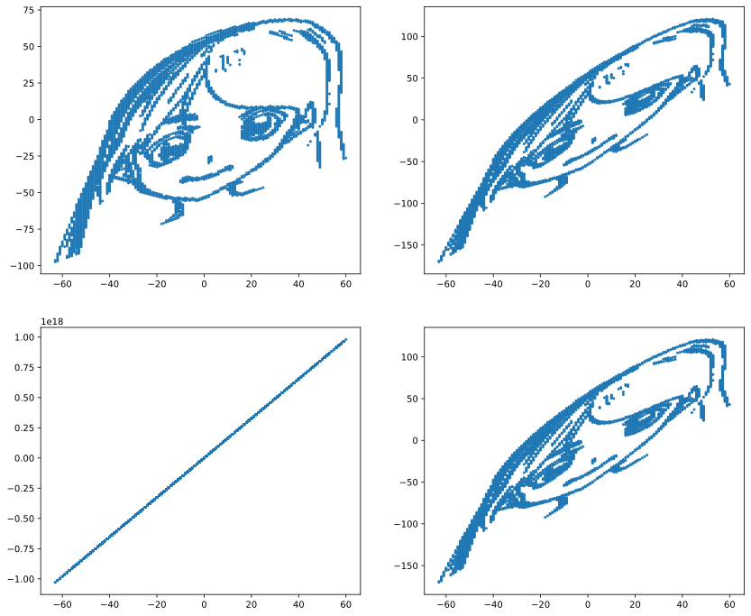

[1, 2, 3, 100, 101, 102]行列の導入
1 学ぶこと
- NumPy配列の結合：concatenate, stack
- NumPy配列のshapeとaxis, 集約関数
- 行列積の導入
2 配列の結合
2.1 concatenate
Code
array([ 1, 2, 3, 100, 101, 102])2.2 ベストプラクティス
appendを使ってリストにためてからnp.arrayを適用するのと，np.concatenateでNumpy配列を結合するのではどちらが早いのだろうか?
Code
from mypy.mymodule import TimeExecute
chunk_size = 100
def pattern1():
x = []
for i in range(10000):
for j in range(chunk_size):
x.append(j)
x= np.array(x)
def pattern2():
x = []
for i in range(10000):
x += list(range(chunk_size))
x = np.array(x)
def pattern3():
x = []
for i in range(10000):
x.append(np.arange(chunk_size))
x = np.concatenate(x)
def pattern4():
x = np.array([])
for i in range(10000):
x = np.concatenate([x, np.arange(chunk_size)])基本的にはpattern3, つまりNumPy配列をリストに入れる作業の後に， まとめて結合させるのが良い． chunk_sizeが小さい場合には他のpatternが優勢なときもある.
配列は要素の結合などのように素数が変化する処理には向いていないため， 結合回数を少なくすることがよい.
3 NumPy配列の分割
3.1 スライス
普通に働くので省略.
3.2 np.split
あまり使う機会はあにが指定した数に要素を当分する.
4 多次元リストと多次元配列
array([[ 1, 2, 3],
[11, 12, 13],
[21, 22, 23],
[31, 32, 33]])4.1 行列の積み上げ
np.concatenateは末尾への結合であったが，np.stackは配列を積み重ねていくことが可能である.
5 多次元配列のスライスの解釈
array([[100, 50, 50],
[ 50, 30, 100],
[ 50, 50, 70],
[100, 50, 100]])5.1 行と列が反転したときのスライス
5.2 スライスと識別子
スライスしたときに作成されるのは元の変数のViewである．
スライスで作ったViewと元の変数は識別しが異なる，ということになる.
ただし配列を抜けるとそれは数値になるので，そこでも識別子は異なる.
2627982381584
2627982381584
26279823845446 NumPy配列のshape
7 集約関数
Code
62
278784
12.4
1.8547236990991407
12.0
5
16
11
0
3集約関数ではないが，いわゆる最大値の管理，最小値の管理とう面で活用出来るのがnp.maxmium/minimumである．これらの関数はnp.clipと等価である.
Code
[3 3 3 3 4 5 6 7 7 7]
[3 3 3 3 4 5 6 7 7 7]8 多次元配列と集約関数のaxis
Code
8009 多次元配列の次元
numpy配列の次元とはlen(x.shape)である.
10 多次元配列化出来ない「リストのリスト」
リストのリストは通常，NumPyヘア塚しても多次元配列にはならないが，入れ子になった内側のリストの要素数が全て同じ，つまり多次元リストに限定すれば多次元配列となる.
とはいえ，下記とおり思わぬエラーが発生するもとであるので，基本的にはリストのリストか直接多次元配列を作成することはやめておいた方が良い.
Code
[[1, 2], [3, 4, 5], [6, 7, 8, 9]]
[list([1, 2]) list([3, 4, 5]) list([6, 7, 8, 9])]
object
(3,)IndexError: too many indices for array: array is 1-dimensional, but 2 were indexed11 配列の結合でのaxis
12 行列の導入
Code
sell_amount = np.array([[20, 10, 15], [15, 15, 20],[30, 25, 25]])
price = np.array([120, 120, 180])
print(price.shape) # (3, )
p = np.expand_dims(price, axis=-1) # 行列にするために軸を増やす。要素数1の軸を作る
print(p.shape) # (3, 1) これで行列になる
result = np.dot(sell_amount, p) # (3, 3) x (3, 1)の行列積
print(result.shape) # (3, 1)
result = result[:, 0] # 末尾の軸がいらないのでスライス
print(result.shape) # (3, ) ベクトルに戻ったprint(result(3,)
(3, 1)
(3, 1)
(3,)13 演習問題
13.1 q1:np.concatenate
ValueError: all the input arrays must have same number of dimensions, but the array at index 0 has 1 dimension(s) and the array at index 1 has 0 dimension(s)array([0, 1, 2, 3, 4, 0, 1, 2, 3, 4, 5, 6])array([0, 1, 2, 3, 4, 5, 6, 7, 8, 0, 1, 2, 3, 4, 5, 6, 7, 8, 0, 1, 2, 3,
4, 5, 6, 7, 8, 0, 1, 2, 3, 4, 5, 6, 7, 8, 0, 1, 2, 3, 4, 5, 6, 7,
8, 0, 1, 2, 3, 4, 5, 6, 7, 8, 0, 1, 2, 3, 4, 5, 6, 7, 8, 0, 1, 2,
3, 4, 5, 6, 7, 8, 0, 1, 2, 3, 4, 5, 6, 7, 8, 0, 1, 2, 3, 4, 5, 6,
7, 8])13.2 q2:np.stack
array([[0, 0],
[1, 1],
[2, 2],
[3, 3],
[4, 4]])ValueError: all input arrays must have the same shapeAxisError: axis 2 is out of bounds for array of dimension 2array([[0, 0, 0, 0, 0, 0, 0, 0],
[1, 1, 1, 1, 1, 1, 1, 1]])array([[0, 1],
[0, 1],
[0, 1],
[0, 1],
[0, 1],
[0, 1],
[0, 1],
[0, 1]])13.3 q3:スライスのshape
array([ 0.00284592, 0.68822271, -0.87953634, 0.28362732, -0.80536652,
-1.72766949, -0.39089979, 0.57380586, 0.33858905, -0.01183049,
2.39236527, 0.41291216])array([ 0.2829785 , -0.44398196, 0.9071052 , -0.87953634, -1.29408532,
0.31427199, -2.12310035, -0.73246199, 0.37940061, -0.4276796 ,
0.12074736, 0.76094939, 0.4562709 , 1.37725748, -1.04899168,
1.39535293])13.4 q4:ベクトルの結合
13.5 q5:ベクトルの行列化（１）
13.6 q6:ベクトルの行列化
13.7 q8:分散と標準偏差
13.8 q9:平均値と中央時
array([ 675, 777, 1166, ..., 279, 315, 232])13.9 q10: ポケモンの分析
Code
params [[ 45 49 49 65 65 45]
[ 60 62 63 80 80 60]
[ 80 82 83 100 100 80]
[ 39 52 43 60 50 65]
[ 58 64 58 80 65 80]
[ 78 84 78 109 85 100]
[ 44 48 65 50 64 43]
[ 59 63 80 65 80 58]
[ 79 83 100 85 105 78]
[ 45 30 35 20 20 45]
[ 50 20 55 25 25 30]
[ 60 45 50 90 80 70]
[ 40 35 30 20 20 50]
[ 45 25 50 25 25 35]
[ 65 90 40 45 80 75]
[ 40 45 40 35 35 56]
[ 63 60 55 50 50 71]
[ 83 80 75 70 70 101]
[ 30 56 35 25 35 72]
[ 55 81 60 50 70 97]
[ 40 60 30 31 31 70]
[ 65 90 65 61 61 100]
[ 35 60 44 40 54 55]
[ 60 95 69 65 79 80]
[ 35 55 40 50 50 90]
[ 60 90 55 90 80 110]
[ 50 75 85 20 30 40]
[ 75 100 110 45 55 65]
[ 55 47 52 40 40 41]
[ 70 62 67 55 55 56]
[ 90 92 87 75 85 76]
[ 46 57 40 40 40 50]
[ 61 72 57 55 55 65]
[ 81 102 77 85 75 85]
[ 70 45 48 60 65 35]
[ 95 70 73 95 90 60]
[ 38 41 40 50 65 65]
[ 73 76 75 81 100 100]
[115 45 20 45 25 20]
[140 70 45 85 50 45]
[ 40 45 35 30 40 55]
[ 75 80 70 65 75 90]
[ 45 50 55 75 65 30]
[ 60 65 70 85 75 40]
[ 75 80 85 110 90 50]
[ 35 70 55 45 55 25]
[ 60 95 80 60 80 30]
[ 60 55 50 40 55 45]
[ 70 65 60 90 75 90]
[ 10 55 25 35 45 95]
[ 35 100 50 50 70 120]
[ 40 45 35 40 40 90]
[ 65 70 60 65 65 115]
[ 50 52 48 65 50 55]
[ 80 82 78 95 80 85]
[ 40 80 35 35 45 70]
[ 65 105 60 60 70 95]
[ 55 70 45 70 50 60]
[ 90 110 80 100 80 95]
[ 40 50 40 40 40 90]
[ 65 65 65 50 50 90]
[ 90 95 95 70 90 70]
[ 25 20 15 105 55 90]
[ 40 35 30 120 70 105]
[ 55 50 45 135 95 120]
[ 70 80 50 35 35 35]
[ 80 100 70 50 60 45]
[ 90 130 80 65 85 55]
[ 50 75 35 70 30 40]
[ 65 90 50 85 45 55]
[ 80 105 65 100 70 70]
[ 40 40 35 50 100 70]
[ 80 70 65 80 120 100]
[ 40 80 100 30 30 20]
[ 55 95 115 45 45 35]
[ 80 120 130 55 65 45]
[ 50 85 55 65 65 90]
[ 65 100 70 80 80 105]
[ 90 65 65 40 40 15]
[ 95 75 110 100 80 30]
[ 25 35 70 95 55 45]
[ 50 60 95 120 70 70]
[ 52 90 55 58 62 60]
[ 35 85 45 35 35 75]
[ 60 110 70 60 60 110]
[ 65 45 55 45 70 45]
[ 90 70 80 70 95 70]
[ 80 80 50 40 50 25]
[105 105 75 65 100 50]
[ 30 65 100 45 25 40]
[ 50 95 180 85 45 70]
[ 30 35 30 100 35 80]
[ 45 50 45 115 55 95]
[ 60 65 60 130 75 110]
[ 35 45 160 30 45 70]
[ 60 48 45 43 90 42]
[ 85 73 70 73 115 67]
[ 30 105 90 25 25 50]
[ 55 130 115 50 50 75]
[ 40 30 50 55 55 100]
[ 60 50 70 80 80 150]
[ 60 40 80 60 45 40]
[ 95 95 85 125 75 55]
[ 50 50 95 40 50 35]
[ 60 80 110 50 80 45]
[ 50 120 53 35 110 87]
[ 50 105 79 35 110 76]
[ 90 55 75 60 75 30]
[ 40 65 95 60 45 35]
[ 65 90 120 85 70 60]
[ 80 85 95 30 30 25]
[105 130 120 45 45 40]
[250 5 5 35 105 50]
[ 65 55 115 100 40 60]
[105 95 80 40 80 90]
[ 30 40 70 70 25 60]
[ 55 65 95 95 45 85]
[ 45 67 60 35 50 63]
[ 80 92 65 65 80 68]
[ 30 45 55 70 55 85]
[ 60 75 85 100 85 115]
[ 40 45 65 100 120 90]
[ 70 110 80 55 80 105]
[ 65 50 35 115 95 95]
[ 65 83 57 95 85 105]
[ 65 95 57 100 85 93]
[ 65 125 100 55 70 85]
[ 75 100 95 40 70 110]
[ 20 10 55 15 20 80]
[ 95 125 79 60 100 81]
[130 85 80 85 95 60]
[ 48 48 48 48 48 48]
[ 55 55 50 45 65 55]
[130 65 60 110 95 65]
[ 65 65 60 110 95 130]
[ 65 130 60 95 110 65]
[ 65 60 70 85 75 40]
[ 35 40 100 90 55 35]
[ 70 60 125 115 70 55]
[ 30 80 90 55 45 55]
[ 60 115 105 65 70 80]
[ 80 105 65 60 75 130]
[160 110 65 65 110 30]
[ 90 85 100 95 125 85]
[ 90 90 85 125 90 100]
[ 90 100 90 125 85 90]
[ 41 64 45 50 50 50]
[ 61 84 65 70 70 70]
[ 91 134 95 100 100 80]
[106 110 90 154 90 130]
[100 100 100 100 100 100]]
params_header ['HP' '攻撃' '防御' '特攻' '特防' '素早']
names ['フシギダネ' 'フシギソウ' 'フシギバナ' 'ヒトカゲ' 'リザード' 'リザードン' 'ゼニガメ' 'カメール' 'カメックス'
'キャタピー' 'トランセル' 'バタフリー' 'ビードル' 'コクーン' 'スピアー' 'ポッポ' 'ピジョン' 'ピジョット' 'コラッタ'
'ラッタ' 'オニスズメ' 'オニドリル' 'アーボ' 'アーボック' 'ピカチュウ' 'ライチュウ' 'サンド' 'サンドパン' 'ニドラン♀'
'ニドリーナ' 'ニドクイン' 'ニドラン♂' 'ニドリーノ' 'ニドキング' 'ピッピ' 'ピクシー' 'ロコン' 'キュウコン' 'プリン'
'プクリン' 'ズバット' 'ゴルバット' 'ナゾノクサ' 'クサイハナ' 'ラフレシア' 'パラス' 'パラセクト' 'コンパン'
'モルフォン' 'ディグダ' 'ダグトリオ' 'ニャース' 'ペルシアン' 'コダック' 'ゴルダック' 'マンキー' 'オコリザル'
'ガーディ' 'ウインディ' 'ニョロモ' 'ニョロゾ' 'ニョロボン' 'ケーシィ' 'ユンゲラー' 'フーディン' 'ワンリキー'
'ゴーリキー' 'カイリキー' 'マダツボミ' 'ウツドン' 'ウツボット' 'メノクラゲ' 'ドククラゲ' 'イシツブテ' 'ゴローン'
'ゴローニャ' 'ポニータ' 'ギャロップ' 'ヤドン' 'ヤドラン' 'コイル' 'レアコイル' 'カモネギ' 'ドードー' 'ドードリオ'
'パウワウ' 'ジュゴン' 'ベトベター' 'ベトベトン' 'シェルダー' 'パルシェン' 'ゴース' 'ゴースト' 'ゲンガー' 'イワーク'
'スリープ' 'スリーパー' 'クラブ' 'キングラー' 'ビリリダマ' 'マルマイン' 'タマタマ' 'ナッシー' 'カラカラ' 'ガラガラ'
'サワムラー' 'エビワラー' 'ベロリンガ' 'ドガース' 'マタドガス' 'サイホーン' 'サイドン' 'ラッキー' 'モンジャラ'
'ガルーラ' 'タッツー' 'シードラ' 'トサキント' 'アズマオウ' 'ヒトデマン' 'スターミー' 'バリヤード' 'ストライク'
'ルージュラ' 'エレブー' 'ブーバー' 'カイロス' 'ケンタロス' 'コイキング' 'ギャラドス' 'ラプラス' 'メタモン' 'イーブイ'
'シャワーズ' 'サンダース' 'ブースター' 'ポリゴン' 'オムナイト' 'オムスター' 'カブト' 'カブトプス' 'プテラ' 'カビゴン'
'フリーザー' 'サンダー' 'ファイヤー' 'ミニリュウ' 'ハクリュー' 'カイリュー' 'ミュウツー' 'ミュウ']
numbers [ 1 2 3 4 5 6 7 8 9 10 11 12 13 14 15 16 17 18
19 20 21 22 23 24 25 26 27 28 29 30 31 32 33 34 35 36
37 38 39 40 41 42 43 44 45 46 47 48 49 50 51 52 53 54
55 56 57 58 59 60 61 62 63 64 65 66 67 68 69 70 71 72
73 74 75 76 77 78 79 80 81 82 83 84 85 86 87 88 89 90
91 92 93 94 95 96 97 98 99 100 101 102 103 104 105 106 107 108
109 110 111 112 113 114 115 116 117 118 119 120 121 122 123 124 125 126
127 128 129 130 131 132 133 134 135 136 137 138 139 140 141 142 143 144
145 146 147 148 149 150 151]13.10 q11:種族値合計
- params:種族値
- params_header:種族値のヘッダー
- names:ポケモンの名前
- numbers:ポケモン図鑑No.
13.11 q12:種族値の集約
Code
HP
平均 = 64.21192052980132,
最大 = 250,
最小 = 10,
中央値 = 60.0
----------
攻撃
平均 = 72.91390728476821,
最大 = 134,
最小 = 5,
中央値 = 70.0
----------
防御
平均 = 68.2251655629139,
最大 = 180,
最小 = 5,
中央値 = 65.0
----------
特攻
平均 = 67.13907284768212,
最大 = 154,
最小 = 15,
中央値 = 65.0
----------
特防
平均 = 66.08609271523179,
最大 = 125,
最小 = 20,
中央値 = 65.0
----------
素早
平均 = 69.06622516556291,
最大 = 150,
最小 = 15,
中央値 = 70.0
----------13.12 q13:種族値のランキング
np.argsortにより，ソート結果がインデックスで表示されるので，わたしがやっているようにわざわざ構造体の 配列を作成して処理行う必要はなかった。
とはいえ，いい勉強になった気がする.
array([('キャタピー', 195), ('ビードル', 195), ('コイキング', 200), ('コクーン', 205),
('トランセル', 205), ('ズバット', 245), ('ポッポ', 251), ('コラッタ', 253),
('オニスズメ', 262), ('ディグダ', 265)],
dtype=[('name', '<U10'), ('param', '<i4')])array([('ラプラス', 535), ('カビゴン', 540), ('ギャラドス', 540), ('ウインディ', 555),
('サンダー', 580), ('ファイヤー', 580), ('フリーザー', 580), ('カイリュー', 600),
('ミュウ', 600), ('ミュウツー', 680)],
dtype=[('name', '<U10'), ('param', '<i4')])13.13 q15: 偏差値ソート
Code
(array([('キャタピー', 28.6383417 ), ('ビードル', 28.6383417 ),
('コイキング', 29.1406324 ), ('コクーン', 29.6429231 ),
('トランセル', 29.6429231 ), ('ズバット', 33.66124868),
('ポッポ', 34.26399752), ('コラッタ', 34.4649138 ),
('オニスズメ', 35.36903705), ('ディグダ', 35.67041147)],
dtype=[('name', '<U10'), ('param', '<f8')]),
array([('ラプラス', 62.79410915), ('カビゴン', 63.29639985),
('ギャラドス', 63.29639985), ('ウインディ', 64.80327194),
('サンダー', 67.31472543), ('ファイヤー', 67.31472543),
('フリーザー', 67.31472543), ('カイリュー', 69.32388822),
('ミュウ', 69.32388822), ('ミュウツー', 77.36053939)],
dtype=[('name', '<U10'), ('param', '<f8')]))Code
[30.97512971 34.48448155 36.23915747 36.23915747 37.99383338 37.99383338
37.99383338 37.99383338 37.99383338 37.99383338] [ 64.31397216 64.31397216 64.31397216 64.66490734 67.823324
73.08735175 73.08735175 76.59670359 83.61540726 115.19957379]
[24.53229698 26.40729609 30.15729429 30.15729429 32.03229339 33.90729249
33.90729249 35.78229159 35.78229159 35.78229159] [65.7822772 67.6572763 67.6572763 69.5322754 69.5322754 71.4072745
71.4072745 71.4072745 71.4072745 72.90727378]
[26.43263987 30.16016829 32.0239325 33.8876967 35.75146091 35.75146091
35.75146091 35.75146091 37.61522512 37.61522512] [65.57168825 67.43545246 67.43545246 67.43545246 69.29921666 69.29921666
71.16298087 73.02674508 84.20933033 91.66438717]
[31.6667079 33.42482241 33.42482241 33.42482241 35.18293692 35.18293692
35.18293692 35.18293692 36.94105143 36.94105143] [66.82899809 66.82899809 68.5871126 68.5871126 70.34522711 70.34522711
70.34522711 72.10334162 73.86145613 80.54229127]
[30.89972952 30.89972952 30.89972952 32.97196752 32.97196752 32.97196752
32.97196752 32.97196752 32.97196752 35.04420551] [66.12777544 66.12777544 68.20001344 68.20001344 68.20001344 68.20001344
70.27225144 72.34448943 72.34448943 74.41672743]
[29.92712204 31.78344527 31.78344527 33.6397685 33.6397685 33.6397685
35.49609173 35.49609173 35.49609173 35.49609173] [65.19726343 65.19726343 67.05358666 67.05358666 68.9099099 68.9099099
72.62255636 72.62255636 72.62255636 80.04784928]IndexError: index 6 is out of bounds for axis 1 with size 6array([266.98670102, 299.40429343, 344.12475328, 263.22003676,
298.79723743, 346.6823034 , 265.79349106, 299.74828355,
346.5409814 , 220.16999211, 223.89110947, 295.41238503,
220.28287432, 224.00399168, 296.34781708, 241.47904633,
277.82687269, 326.259979 , 242.65493362, 302.69998443,
245.50993826, 312.69971633, 256.10173332, 315.75230634,
267.5884241 , 329.00172699, 259.72545478, 315.6260296 ,
250.22749063, 283.76783552, 336.38276957, 249.6874199 ,
283.97327047, 335.95995755, 268.41656752, 327.83337136,
260.32633 , 337.18064313, 246.35035403, 307.52527238,
239.55814096, 317.8189457 , 267.54547722, 295.39914637,
330.59939705, 254.9866355 , 299.94568838, 261.938432 ,
315.50231661, 247.73349359, 307.61783579, 256.0686326 ,
311.96920741, 266.98955604, 334.07024582, 262.08245686,
317.98303168, 277.99040793, 354.29585927, 259.8073959 ,
291.18529885, 338.57632737, 263.04675511, 296.5871 ,
334.27192089, 261.06306639, 298.87565143, 336.71070625,
258.66895779, 292.20930268, 329.89412356, 275.15142553,
341.59699116, 259.77333076, 293.31367565, 332.57117084,
301.1847966 , 334.72514149, 264.45312496, 329.97592473,
268.95002061, 320.70611944, 288.91902357, 263.6421557 ,
323.25537698, 269.78170242, 325.68227724, 268.83460026,
335.09636505, 261.26638008, 342.84711314, 262.25800801,
297.87059089, 333.48317378, 292.03877794, 271.89640979,
329.55509911, 269.21903289, 325.11960771, 271.2386319 ,
330.92738364, 268.52767877, 344.1570508 , 267.54307448,
307.556017 , 320.55194558, 320.53461105, 291.53774888,
274.61893999, 330.51951481, 275.67829623, 327.70551598,
313.91283669, 308.37167245, 330.98119238, 256.9246648 ,
310.75300162, 267.75434163, 316.11427103, 274.9234154 ,
342.00410519, 321.50439989, 335.16677147, 317.73967011,
330.85093913, 332.65387572, 334.92238078, 331.20024553,
222.58782106, 350.32911051, 346.90637896, 255.38234933,
269.79899305, 342.5982215 , 343.91963656, 345.10479332,
295.27882319, 280.04619583, 331.58032416, 280.53799966,
332.94137665, 340.17732426, 349.2644539 , 365.55530159,
363.45099885, 363.2798768 , 260.08221194, 304.80267179,
371.95806505, 399.76472594, 371.65554495])Code
(array([('キャタピー', 220.16999211), ('ビードル', 220.28287432),
('コイキング', 222.58782106), ('トランセル', 223.89110947),
('コクーン', 224.00399168), ('ズバット', 239.55814096),
('ポッポ', 241.47904633), ('コラッタ', 242.65493362),
('オニスズメ', 245.50993826), ('プリン', 246.35035403)],
dtype=[('name', '<U10'), ('param', '<f8')]),
array([('ラプラス', 346.90637896), ('カビゴン', 349.2644539 ),
('ギャラドス', 350.32911051), ('ウインディ', 354.29585927),
('ファイヤー', 363.2798768 ), ('サンダー', 363.45099885),
('フリーザー', 365.55530159), ('ミュウ', 371.65554495),
('カイリュー', 371.95806505), ('ミュウツー', 399.76472594)],
dtype=[('name', '<U10'), ('param', '<f8')]))13.14 q18：コサイン類似度
Code
array([131.53706702, 166.77229986, 215.43676566, 128.05858035,
166.88019655, 219.84085153, 130.03845585, 166.85023224,
217.86234186, 83.51646544, 89.86100378, 165.90660023,
83.81527307, 87.32124598, 167.25728684, 103.97595876,
143.64887748, 197.26885208, 110.88282103, 173.1906464 ,
113.67497526, 184.36919482, 119.59096956, 185.07295859,
137.65899898, 203.2855135 , 135.09256086, 192.35384062,
113.22102278, 149.72975656, 206.78249442, 112.53888217,
149.76314633, 207.28965242, 135.19985207, 199.94749311,
125.19984026, 208.06489372, 136.74794331, 195.63997547,
101.85774394, 186.74849397, 135.27749258, 164.84841522,
204.81699148, 121.75795662, 172.98843892, 125.59856687,
185.87630295, 126.58988901, 188.48076825, 127.08265027,
185.47236991, 131.36970731, 204.59227747, 131.81426326,
190.72231123, 144.74114826, 228.08989456, 130.3840481 ,
160.54594358, 209.88091862, 152.97058541, 184.52642087,
221.81073013, 132.19304066, 171.53716798, 214.18449991,
129.42179106, 164.62077633, 203.59273072, 147.73286703,
215.2324325 , 142.12670404, 174.78558293, 216.73716802,
171.17242769, 207.24381776, 141.33294025, 209.88091862,
144.3086969 , 198.30532015, 156.96177879, 136.19838472,
199.74984355, 135. , 195.51214796, 141.50971698,
210.71307506, 139.19410907, 240.98755155, 143.70107863,
178.39562775, 214.59263734, 191.50718002, 140.14991973,
201.23866428, 154.19143945, 209.22475953, 145.08618129,
215.17434791, 137.20422734, 222.5982929 , 139.10427743,
181.72781845, 201.50186103, 197.14715316, 163.93596311,
147.30919863, 206.03397778, 158.35087622, 219.03196114,
278.02877549, 188.87826768, 206.27651345, 128.54960132,
185.87630295, 133.44661854, 185.30515373, 145.25839046,
216.56407828, 200.87309427, 209.40391591, 198.0530232 ,
204.05391444, 205.84703058, 212.13203436, 207.96634343,
102.71319292, 225.94689642, 224.44375687, 117.57550765,
133.51029923, 223.77444001, 223.77444001, 223.77444001,
164.84841522, 158.66631653, 212.77922831, 153.21553446,
208.266656 , 218.57492994, 243.20773014, 239.16521486,
239.06066176, 239.06066176, 123.70125303, 172.34268189,
248.31834407, 283.11128554, 244.94897428])array([0.76775866, 0.77831184, 0.78579701, 0.73864701, 0.76838728,
0.77637519, 0.74399024, 0.75844481, 0.76630726, 0.83401157,
0.82191954, 0.76584406, 0.80050142, 0.81651448, 0.78042715,
0.7732884 , 0.81272924, 0.79941104, 0.6667547 , 0.72244497,
0.73786642, 0.75737419, 0.72490712, 0.75291367, 0.66933747,
0.73024536, 0.71859186, 0.76129129, 0.84610336, 0.83759717,
0.82222066, 0.80932011, 0.80786913, 0.80592149, 0.8686574 ,
0.85069317, 0.71199858, 0.75424095, 1. , 0.9765127 ,
0.77357499, 0.79197344, 0.76355813, 0.78628622, 0.78994434,
0.73122464, 0.7640828 , 0.84132222, 0.78290352, 0.5040175 ,
0.61786215, 0.68620096, 0.73630981, 0.79740434, 0.80153485,
0.72120735, 0.75725961, 0.80710131, 0.81113599, 0.68705392,
0.77433481, 0.81269557, 0.57246217, 0.63506573, 0.67008084,
0.87403272, 0.84195341, 0.81770504, 0.82070661, 0.82513189,
0.8216333 , 0.65587028, 0.75596467, 0.65344228, 0.70079081,
0.74902925, 0.72733168, 0.7436442 , 0.91452425, 0.82227719,
0.62835978, 0.69695804, 0.76825596, 0.68188472, 0.71937494,
0.82742121, 0.8237992 , 0.89658695, 0.85807256, 0.62124011,
0.60613781, 0.64119439, 0.68763428, 0.71391812, 0.50117967,
0.78188538, 0.79799488, 0.60349924, 0.68068093, 0.64515359,
0.65081489, 0.7954741 , 0.83771742, 0.71758171, 0.71828369,
0.66321986, 0.6639597 , 0.86984039, 0.69250599, 0.73470111,
0.80931344, 0.8104588 , 0.90150245, 0.73367956, 0.83487283,
0.66130442, 0.71798941, 0.73841481, 0.82576632, 0.64438873,
0.70573078, 0.62707092, 0.73946533, 0.73384588, 0.74720596,
0.75934776, 0.72478458, 0.7305117 , 0.47167065, 0.80750155,
0.9049524 , 0.80605994, 0.79694329, 0.90520822, 0.70341541,
0.74671508, 0.80181232, 0.64293736, 0.73117197, 0.64671911,
0.71804682, 0.74942274, 0.92984708, 0.77280931, 0.79455989,
0.8014425 , 0.76821252, 0.78052379, 0.79497546, 0.79349323,
0.80605994])Code
(array([('コイキング', 0.47167065), ('イワーク', 0.50117967), ('ディグダ', 0.5040175 ),
('ケーシィ', 0.57246217), ('クラブ', 0.60349924), ('パルシェン', 0.60613781),
('ダグトリオ', 0.61786215), ('シェルダー', 0.62124011),
('バリヤード', 0.62707092), ('コイル', 0.62835978)],
dtype=[('name', '<U10'), ('param', '<f8')]),
array([('ベロリンガ', 0.86984039), ('ワンリキー', 0.87403272),
('ベトベター', 0.89658695), ('ラッキー', 0.90150245), ('ラプラス', 0.9049524 ),
('シャワーズ', 0.90520822), ('ヤドン', 0.91452425), ('カビゴン', 0.92984708),
('プクリン', 0.9765127 ), ('プリン', 1. )],
dtype=[('name', '<U10'), ('param', '<f8')]))なんかすべてのポケモンをまとめて計算出来そうな気がする.
Code
(151, 151)13.15 q19:画像入門
13.16 q20:行列積の可換性
13.17 q22:あんこ商店
Code
(100, 4)array([[ 120, 0, 0, 0],
[ 0, 180, 0, 0],
[ 0, 0, 270, 0],
[ 0, 0, 0, 1200]])13.18 q23:アファイン変換入門
13.19 q24:アファイン変換ー回転
Code
thetas = [np.pi / 6, np.pi / 3, np.pi / 2, 4 * np.pi / 3]
fig = plt.figure(figsize = (14, 12))
for i, theta in enumerate(thetas):
rotated_points = np.dot(gen_pmat(theta), character)
ax = fig.add_subplot(2, 2, i + 1)
ax.plot(
rotated_points[0],
rotated_points[1],
linewidth = 0,
markersize = 2,
marker = "o"
)
plt.show()13.20 q25: せん断変形
Code
thetas = [np.pi / 6, np.pi / 3, np.pi / 2, 4 * np.pi / 3]
fig = plt.figure(figsize = (14, 12))
for i, theta in enumerate(thetas):
rotated_points = np.dot(gen_skewmat(theta), character)
ax = fig.add_subplot(2, 2, i + 1)
ax.plot(
rotated_points[0],
rotated_points[1],
linewidth = 0,
markersize = 2,
marker = "o"
)
plt.show()